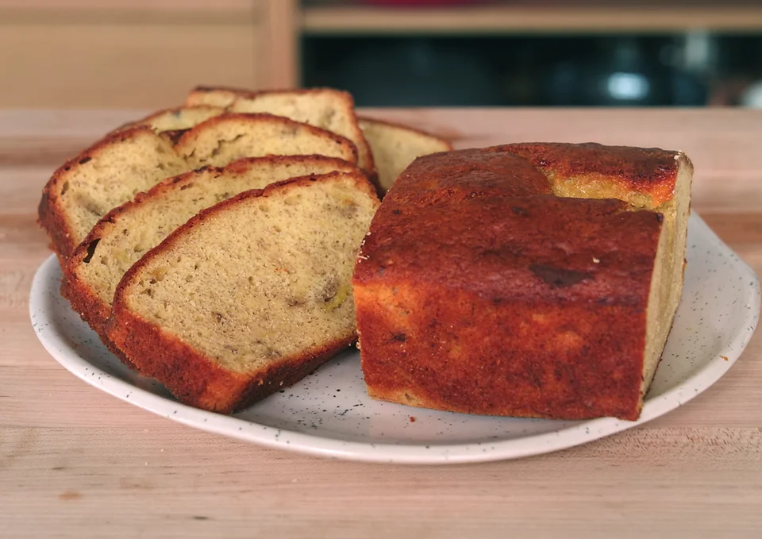

Home
3-Ingredient Banana Bread

This recipe from
Joshua Weissman
; you can see the recipe on his own site by clicking the image above!
Description
The easiest 3-ingredient banana bread ever!
Ingredients
3 very ripe bananas
2 large eggs
1 box, fancy yellow cake mix
Directions
Preheat your oven to 350°F (176°C).
In a large mixing bowl, mash the bananas with a handheld mixer.
Add the eggs and mix until combined, then whisk in the cake mix until fully combined.
Line a 9” x 5” non-stick loaf pan with parchment paper.
Pour in the batter.
Bake for 45-50 minutes, or until a toothpick or cake tester comes out clean.
Let the cake cool and then slice and enjoy.